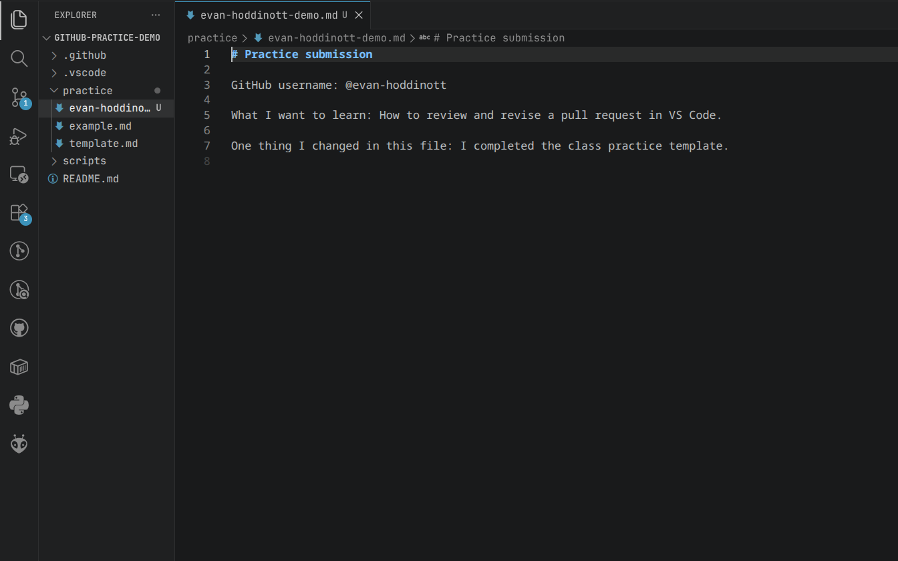
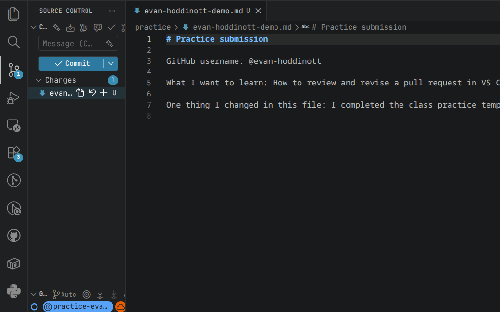
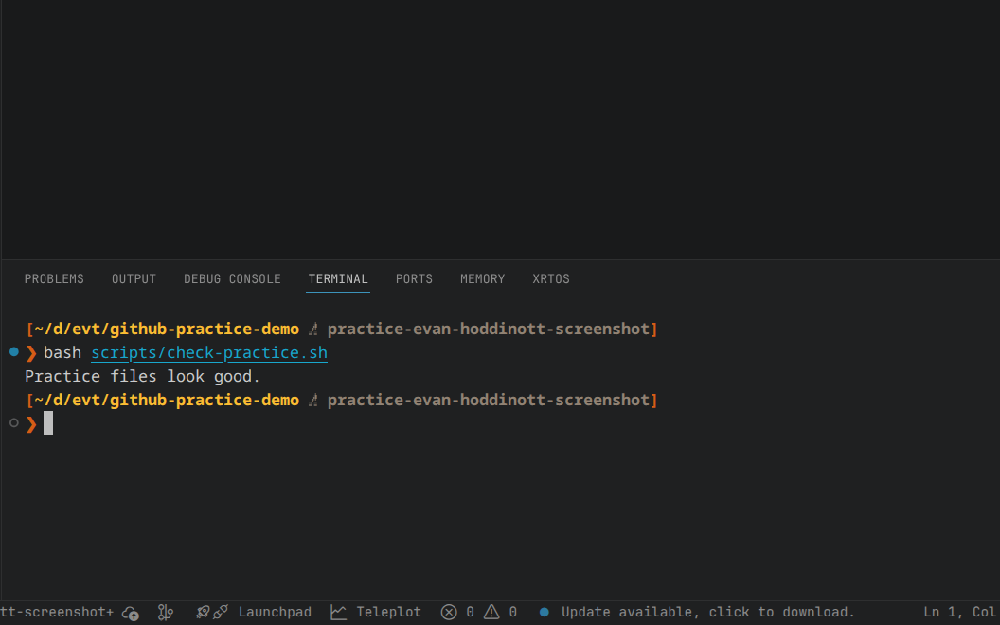
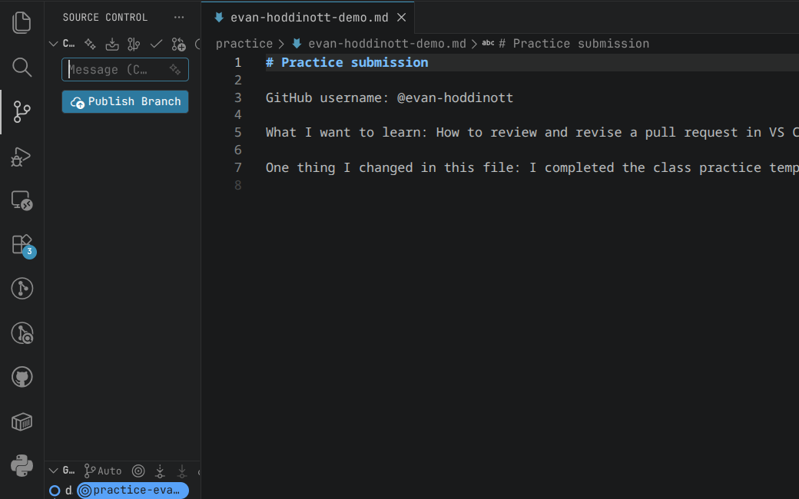
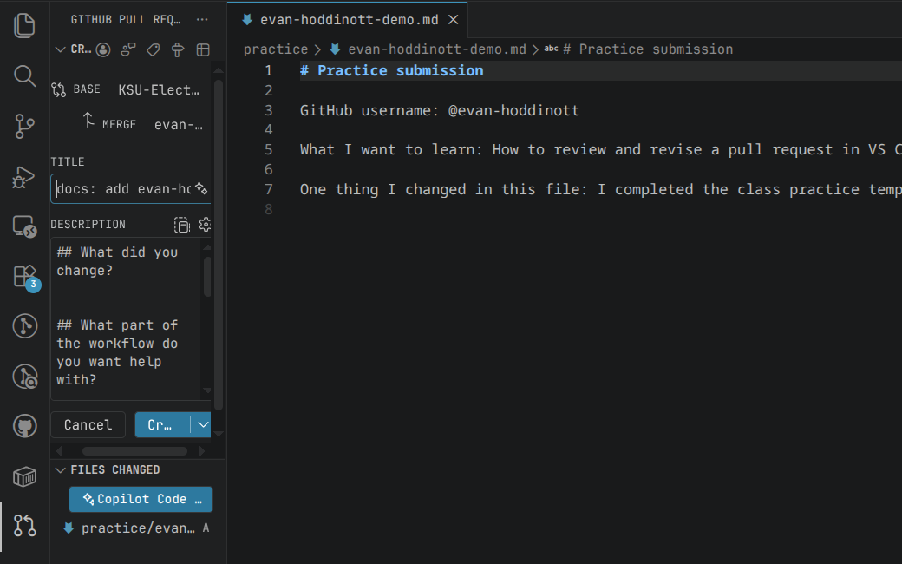
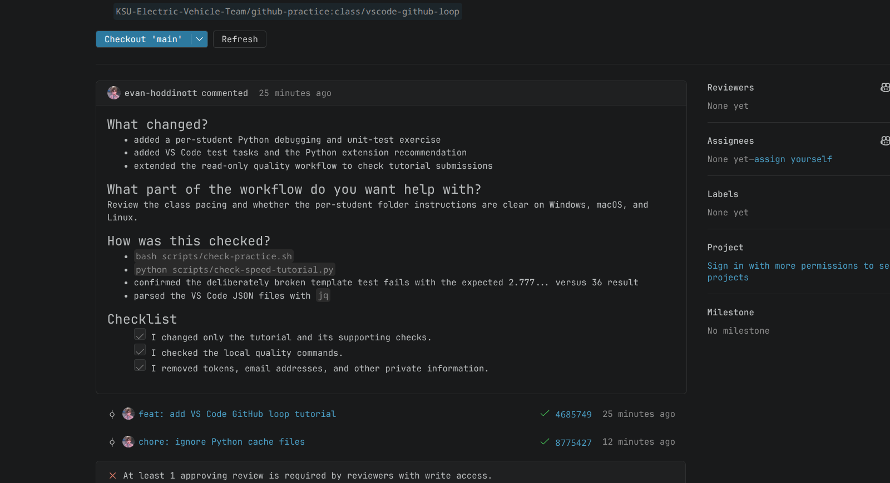

Setup
Install the class tools
- Create or sign in to a GitHub account.
- Install VS Code.
- Install Git.
- Download the Lite pack for your operating system from the EVT extension pack release.
Open the Command Palette and run Extensions: Install from VSIX.... Select the downloaded .vsix file.
Open the repository
Fork, clone, and check the remotes
- Fork the practice repository to your GitHub account.
- In VS Code, run Git: Clone from the Command Palette.
- Clone your fork and open the repository folder.
- If VS Code asks whether you trust the authors, confirm that the open folder is your
github-practicefork.
git status
git remote -vorigin should point to your fork. Add the team repository if upstream is missing:
git remote add upstream https://github.com/KSU-Electric-Vehicle-Team/github-practice.git01 / Edit
Create a branch and edit your file
Run Git: Create Branch and name the branch practice-YOUR-GITHUB-USERNAME.
Copy practice/template.md to practice/YOUR-GITHUB-USERNAME.md. Replace every TODO, then save the file.

Confirm the branch in the status bar and edit only your username file.
If you already have an open practice pull request, use its branch and file. Do not create a duplicate pull request.
02 / Stage
Review and stage the change
Open View > Source Control. Select the changed file and read the diff. Check the filename, removed lines, added lines, and any unrelated changes.

Select the changed file to inspect it before staging.
Select the + beside your file. It should move to Staged Changes. Open the staged diff and read it again.
Stage the intended file. Do not select Stage All for this exercise.
03 / Check
Run the practice check
Open the VS Code terminal at the repository root and run:
bash scripts/check-practice.shContinue when the terminal prints Practice files look good.

Use the script result to verify the exercise.
04 / Publish
Commit and publish the branch
Enter a one-line commit message in Source Control. For example:
docs: add YOUR-GITHUB-USERNAME practice submissionSelect Commit, then Publish Branch. Publish to your fork.

Check the current branch before publishing.
05 / Pull request
Open a draft pull request
- Open the GitHub Pull Requests view.
- Run GitHub Pull Requests: Create Pull Request.
- Set the head to your fork and practice branch.
- Set the base to
KSU-Electric-Vehicle-Team/github-practiceandmain. - Write what changed and how you checked it.
- Create the pull request as a draft.

Verify the head, base, title, description, and changed files.
Open the pull request in VS Code. Read the file list, diff, description, and quality check.

First-time contributors may need an owner to approve the workflow run.
06 / Review
Review with a partner
Author
- Confirm the
qualitycheck passed. - Mark the draft ready for review.
- Send the pull request URL to a partner.
Reviewer
- Open the pull request in the GitHub Pull Requests view.
- Check out the branch for inspection.
- Read the diff and run
bash scripts/check-practice.sh. - Leave a comment, request a change, or approve the pull request.
Update the same branch, rerun the check, commit, and push. The existing pull request updates automatically.
07 / Python exercise
Debug and test the conversion function
Open tutorials/vscode-github-loop/template. Copy it to a folder named with your GitHub username.
- Select the Python environment from last class.
- Run the program and reproduce the incorrect speed result.
- Add a breakpoint in
to_kmhand inspectmps. - Run the unit test and confirm it fails.
- Fix the conversion and run the test again.
- Commit and push the fix to the same pull request.
After the merge
Sync main
git switch main
git fetch upstream
git pull --ff-only upstream main
git push origin mainDelete the finished branch only after confirming the pull request was merged.